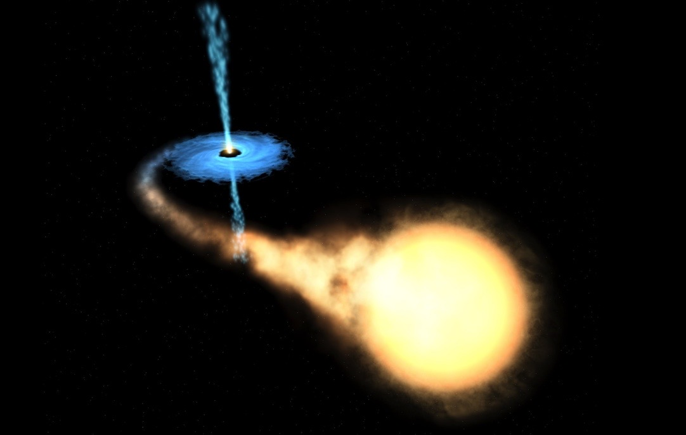

Previous Research
Master Thesis and Research Assistant at SU, Summer Research Intern at Caltech, and Bachelor Thesis at KTH
There are two major research areas I have been interested in:
- Theoretical Physics (including cosmology, astrophysics, and quantum physics): with the goal to learn more about the laws of physics that govern our Universe.
- Control Theory (including non-linear control theory, safety-critical systems, and robotics): with the goal to control and/or mimic phenomena that exists in nature.
Development of Spectral Timing Analysis Software Package in Python (SU)
A primal tool for analyzing high-energy radiation from objects like galactic X-ray binaries and black hole candidates.
I was in charge of developing a statistical software package in Python for analyzing spectral content of X-ray light curves. This include summary statistics such as power spectrum and root mean squared variability for single light curves and coherence, covariance, and time lag for two simultaneous light curves in different energy bands. The python package documentation can be found here: API stasp and the theoretical background.
What are X-ray binaries? NASA explains:
 "Black hole X-ray binaries are systems wherein a normal star orbits a black hole. Many of these systems have extended quiescent periods, wherein their X-ray luminosity hardly exceeds that of our Sun. However, when the black hole actively accretes from the atmosphere of the companion star, the X-ray luminosity can jump upward by eight orders of magnitude. Then, the X-ray emission from hot gas orbiting close to the black hole can be used to study the hole itself."
Master Thesis at Stockholm University (SU)
A Machine Learning Approach for Comprehending Cosmic Expansion

[1] Ludvig Doeser; supervisor: Jens Jasche, examiner: Josefin Larsson, A Machine Learning Approach for Comprehending Cosmic Expansion, KTH DiVA, 2021
Abstract: This thesis aims at using novel machine learning techniques to test the dynamics of the Universe via the cosmological redshift-distance test. Currently, one of the most outstanding questions in cosmology is the physical cause of the accelerating cosmic expansion observed with supernovae. Simultaneously, tensions in measurements of the Hubble expansion parameter $H_0$ are emerging. Measuring the Universe expansion with next generation galaxy imaging surveys, such as provided by the Vera Rubin Observatory, offers the opportunity to discover new physics governing the Universe dynamics. In this thesis, with the long-term goal to unravel these peculiarities, we create a deep generative model in the form of a convolutional variational auto-encoder (VAE), trained with a "Variational Mixture of Posteriors" prior (VampPrior) and high-resolution galaxy images from the simulation project TNG-50. Our model is able to learn a prior on the visual features of galaxies and can generate synthetic galaxy images which preserve the coarse features (shape, size, inclination, and surface brightness profile), but not finer morphological features, such as spiral arms. The generative model for galaxy images is applicable to uses outside the scope of this thesis and is thus a contribution in itself. We next implement a cosmological pinhole camera model, taking angular diameter changes with redshift into account, to forward simulate the actual observation on a telescope detector. Building upon the hypothesis that certain features of galaxies should be of proper physical sizes, we use probabilistic triangulation to find the comoving distance $r(z,\Omega)$ to these in a flat ($K=0$) Universe. Using a sample of high-resolution galaxy images from redshifts $z\in[0.05,0.5]$ from \texttt{TNG-50}, we demonstrate that the implemented Bayesian inference approach successfully estimates $r(z)$ within $1\sigma$-error ($\Delta r_{\text{est}} = 140$ $(580)$ Mpc for $z=0.05$ $(0.5)$). Including the surface brightness attenuation and utilizing the avalanche of upcoming galaxy images could significantly lower the uncertainties. This thesis thus shows a promising path forward utilizing novel machine learning techniques and massive next-generation imaging data to improve and generalize the traditional cosmological angular-diameter test, which in turn has the potential to increase our understanding of the Universe.
Research Intern at California Institute of Technology (Caltech)
Invariant Sets for Integrators and Quadrotor Obstacle Avoidance
The last few years have seen a concerted research effort in autonomous systems, with the goal of integrating these systems into everyday life. As a result, safety guarantees that the system always satisfies certain state constraints is of critical importance in the design of such systems. The notion of set invariance has emerged as a theoretical foundation for safety of dynamical systems. Finding control-invariant sets is, however, challenging for high-dimensional nonlinear systems, but is possible for some systems via analytical techniques. In [1] we show how to characterize invariant sets for integrator systems, and utilize differential flatness to apply the results in UAV collision avoidance. An example is shown in the videos above, where a drone is equipped/not equipped (left/right) with an invariance-based safety filter.
[1] Ludvig Doeser, Petter Nilsson, Aaron D. Ames, Richard M. Murray, Invariant Sets for Integrators and Quadrotor Obstacle Avoidance, in American Control Conference, 2020
Abstract: Ensuring safety through set invariance has proven a useful method in a variety of applications in robotics and control. However, finding analytical expressions for maximal invariant sets, so as to maximize the operational freedom of the system without compromising safety, is notoriously difficult for high-dimensional systems with input constraints. Here we present a generic method for characterizing invariant sets of nth-order integrator systems, based on analyzing roots of univariate polynomials. Additionally, we obtain analytical expressions for the orders $n\leq 4$. Using differential flatness we subsequently leverage the results for the $n=4$ case to the problem of obstacle avoidance for quadrotor UAVs. The resulting controller has a light computational footprint that showcases the power of finding analytical expressions for control-invariant sets.
Bachelor Thesis at KTH Royal Institute of Technology
Coupling of Light Into a Silicon-on-Silica Strip Waveguide
[1] Ludvig Doeser, Erik Rydving, supervisor: Klaus Jöns, Coupling of Light Into a Silicon-on-Silica Strip Waveguide, in American Control Conference, 2020
Abstract: Recent technological advances have made it possible to miniaturize and integrate optical components in quantum circuits. The connection between different components is enabled by waveguides, which support the propagation of the information carrier, a single-photon. A prerequisite for functioning quantum photonic chips is the efficient coupling of non-classical light into the circuit. In this work, this coupling efficiency from an on-chip single-photon source, approximated by a dipole, into a waveguide has been simulated. The high refractive index material silicon nitride Si3N4 has been used as a strip waveguide, placed on top of a silicon oxide SiO2 wafer with surrounding air. To solve Maxwell’s equations in the structures, the finite difference time-domain (FDTD) method has been used through software by Lumerical. It is shown that for the light spectrum with wavelengths 750 to 800 nm a waveguide with cross section dimensions 600x250 nm supports the fundamental transversal electric (TE) and transversal magnetic (TM) modes. The coupling efficiency is shown to reach 7 % in each direction when the dipole is placed on top of the waveguide. Having the dipole on in front of the waveguide, however, results in over 50 % coupling in the forward direction. Additionally, it is shown that in-plane 2D-material single-photon emitters, approximated by in-plane dipoles, give better results than out-of-plane dipoles for most of the tested configurations. In conclusion, these results present evidence for a substantially higher coupling efficiency from 2D-material quantum dots than have been achieved in experiments.